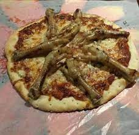
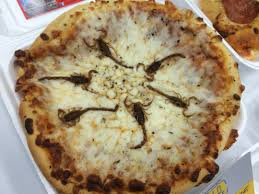
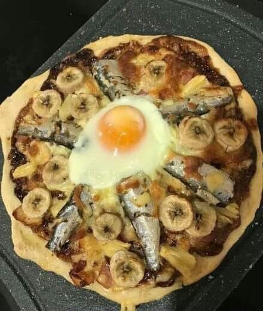
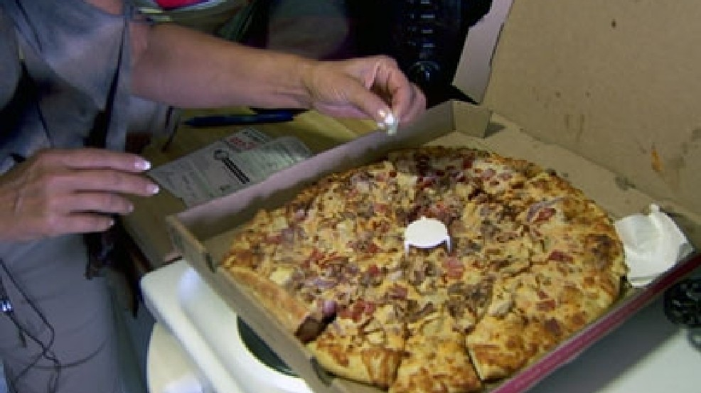
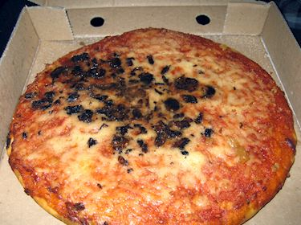
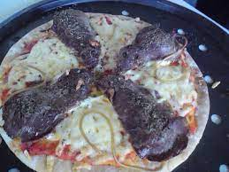

ARE THE DEALS ALL NOW 50% OFF (the normal menue)
"Retro Resurgence Pizza" is a playful ode to whimsy. Atop a bed of molten mozzarella and tangy tomato sauce, aged chicken legs emerge as an unexpected focal point.
These reclaimed treasures, with a wink to the past, evoke a sense of nostalgia and intrigue. Harmonizing with flavors, caramelized onions provide sweetness,
while roasted garlic confit adds depth. A drizzle of balsamic reduction swirls like memories of days gone by. This slice is an exploration of contrasts, a
celebration of reclaimed artistry that tickles the taste buds and the imagination.

"Desert Mirage Surprise Pizza" unveils an enigmatic culinary adventure. Atop a bed of molten mozzarella and tangy tomato sauce, scorpions gather,
their textured forms adding intrigue. Amidst this flavors harmonize: sliced olives offer a rich, earthy note, while roasted red peppers bring warmth.
Emboldening the mosaic, a delicate drizzle of pesto swirls, mimicking desert winds. This slice is an exploration, an invitation to
savor a mirage of sensations. As the eye-catching centerpiece, the scorpions redefine presentation, challenging preconceptions.
The "Desert Surprise Pizza" is a testament to the artistry of flavors, provoking the palate and sparking wonder.

"Seaside Fusion Delight Pizza" is a masterpiece of contrasts. Four whole fish, a trio of sliced bananas, and a crowning egg form an unexpected yet harmonious tableau.
The fish, tender and flaky, evoke oceanic journeys, while banana slices offer a sweet surprise. The golden egg lends a rich, velvety touch, unifying elements in a
culinary canvas. Molten mozzarella binds these treasures, and tomato sauce provides a tangy backdrop. This slice transcends norms, inviting diners to explore flavors
from sea to orchard. It celebrates contrasts, merging sweet and savory, uncooked and cooked, reminding us that culinary adventure knows no bounds.

"Unexpected Thrill Razorblade Pizza" presents a daring twist. Amidst delectable layers of cheese and sauce,
lies a surprising element: artfully crafted metal razorblades. These intricate, pieces provide thrill-seeking aesthetic,
adding a touch of edgy surprise to the familiar. Melted mozzarella blankets the pie, merging with bold tomato sauce.
Each bite is a journey; flavors dance from tangy to savory. Amidst this culinary landscape, the razor symbolize
the excitement of unanticipated encounters. This avant-garde slice redefines dining, challenging boundaries, and delighting
in the element of surprise, leaving diners both captivated and contemplative.

"Slice Solitaire Olive Pizza" offers a twist on tradition. A solitary slice is a canvas for creativity, adorned with
a playful congregation of olives. Their briny allure is showcased against a backdrop of melted mozzarella. A symphony of textures and flavors
unfolds: the tangy pop of Kalamata olives, the buttery subtlety of green olives, and the depth of black olives. This slice stands as a testament
to culinary art's ability to transform even a single canvas into a palette of taste. It's an invitation to savor simplicity and celebrate the
unique charm of each bite.

The "Rubber Room Rat Pizza" is a whimsical delight, featuring a crispy golden crust adorned with rats.
These playfully
rodents evoke curiosity, adding a touch of eccentricity to the familiar. Stringy mozzarella and smoked gouda
interlace with roasted garlic confit, artichoke hearts, and caramelized onions—a symphony of flavors. Fresh basil and truffle-infused
olive oil crown the creation, enhancing its imaginative essence. This pizza isn't just a dish; it's a celebration of unconventional
creativity, a reminder that culinary art knows no bounds, and a delightful journey into the realm of gastronomic playfulness
.

Rumors may have swirled, but Tozy's commitment to his craft and community is unwavering. He passionately denies any unsavory allegations and focuses instead on the shared love of pizza that brings people together. His oven, once the subject of speculation, remains a symbol of culinary excellence rather than any sinister intent.
Tozy's love for New York is evident in every bite of his pizza and every interaction with his patrons. Through the years, he has woven himself into the fabric of the city, celebrating its vibrancy and spirit. In the heart of his pizzeria, the aroma of melting cheese and freshly baked crust is a testament to Tozy's genuine passion, not only for crafting remarkable pizzas but for fostering genuine connections with those who walk through his door.